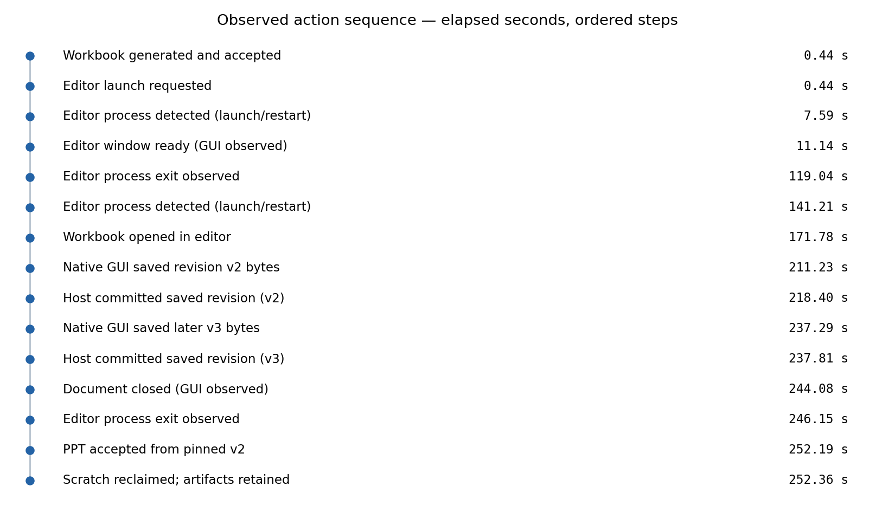
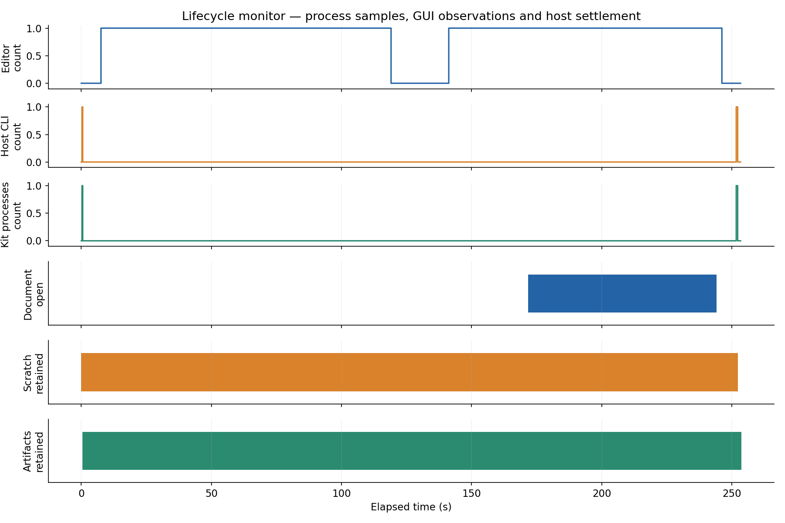
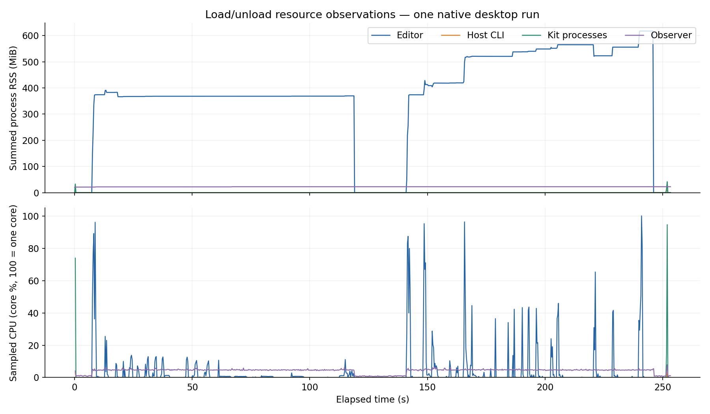

Native office roundtrip
Actual GUI saves → immutable revisions → downstream fixed to v2.
Action sequence

Load/unload monitor

Resource consumption

| Observed operation window | Wall seconds | Sampled peak editor RSS MiB |
|---|
| App launch | 10.70 | 374.1 |
| Document open | 160.61 | 520.9 |
| Save v2 | 11.05 | 565.0 |
| Save v3 | 12.48 | 555.7 |
| Document close | 6.23 | 617.2 |
| App quit | 2.05 | 617.2 |
Measurement limits
- Process samples are observations, not lifecycle authority.
- Summed RSS can double-count shared pages; it is not total physical memory.
- Short-lived workers and final CPU bursts may be missed at 250 ms sampling.
- Access-denied measurements remain unknown rather than zero.
- GUI action windows include operator/automation waits; this is not an isolated application benchmark.
- No VM/spool hot-load manager or new backend is measured; GPU and system-wide resource use are not measured.
- This run includes a failed file-dialog attempt and operator-assisted editor restart before successful editing; it is not a clean launch benchmark.
- The document-open interval includes a stalled file dialog. An identical working copy was placed in a dedicated visible temporary folder before the successful GUI open.